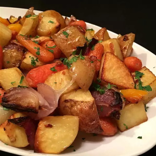

Roasted Vegetables

Description
This versatile recipe has become a family-favorite as all types of vegetables can be used.
Ingredients
- cooking spray (such as Pam®)
- ½ cup olive oil, or more as needed
- 1 (1 ounce) package dry onion soup mix, or more to taste
- 2 pounds potatoes, cut into 1-inch pieces, or more to taste
- 1 pound baby carrots
- 2 large bell peppers, cut into 1-inch pieces
- 1 large onion, cut into 1-inch pieces, or more to taste
Steps
- Preheat oven to 450 degrees F (230 degrees C). Spray a baking pan with cooking spray.
- Mix olive oil and onion soup mix together in a bowl. Combine potatoes, baby carrots, bell peppers, and onion in a large bowl; add oil mixture and mix until evenly coated.
- Roast in the preheated oven until vegetables are tender, 15 to 30 minutes.